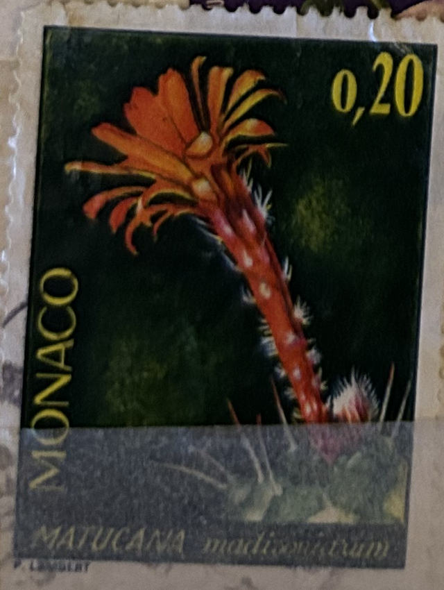
| SOURCE | TITLE| IMAGE MATCH | click to source page |
| eBay | Monaco Timbre N°998 Plante Exotique Matucana Madisoniarium / NEUF** / 1974 | eBay | 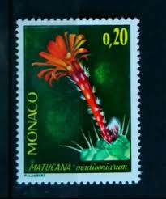 |
| eBay | Monaco 1974 imperf MNH - Cactus 24 Stamps in Quartblocks YT €240.00 | eBay | 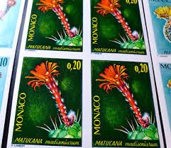 |
| Todocolección | monaco. 1960. puerta del museo oceanografico - Compra venta en todocoleccion | 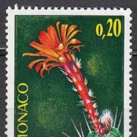 |
| Todocolección | monaco nº yvert 998*** año 1974. flora. matucan - Compra venta en todocoleccion | 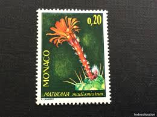 |
| Bob Shop | Monaco - Monaco - Used for sale in Kraaifontein (ID:671674949) | 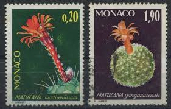 |
| Ay.by | Почтовые марки, продать, купить почтовые марки в Минске - Аукционы Беларуси - Ay.by. Страница 10636 | 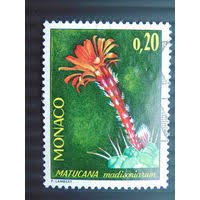 |
| Todocolección | sello nuevo. cactus. matucana madisoniarum. 23 - Compra venta en todocoleccion | 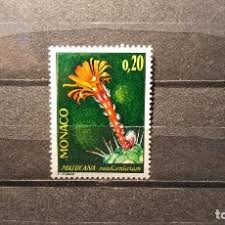 |
| Todocolección | sello mónaco. cactus matucana madisoniarum (197 - Compra venta en todocoleccion | 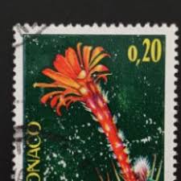 |
| postbeeld.com | Stamp 1974, Monaco Botanic garden 6v, 1974 - Collecting Stamps - PostBeeld - Online Stamp Shop - Collecting | 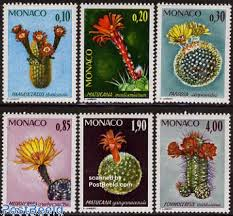 |
| eBay | Haageocereus | eBay | 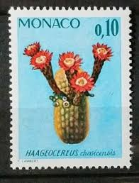 |
| eBay | Haageocereus for sale | eBay | 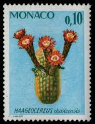 |
| Colnect | Stamp: Haageocereus chosicensis (Monaco(Rare plants of the Botanical Garden) Mi:MC 1154,Sn:MC 955,Yt:MC 997,Sg:MC 1180,AFA:MC 1166,Un:MC 997 📮 | 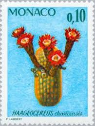 |
| eBay | 67548] Monaco 1964 Flora flowers blumen fleur From set MNH | eBay | 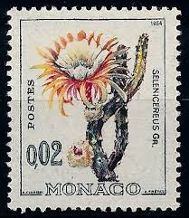 |
| eBay | 67563] Monaco 1974 Flora flowering Cactus MNH | eBay | 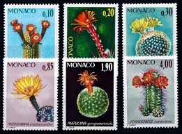 |
| Wikimedia.org | File:Stamp 1964 Monaco MiNr0774 mt B002.jpg - Wikimedia Commons | 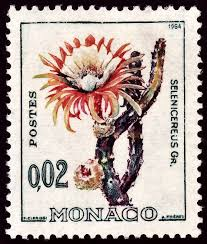 |
| eBay | MONACO - 1974 RARE PLANTS OF THE BOTANICAL GARDEN SC#958-960 CV=12.00 USD 3V MNH | eBay | 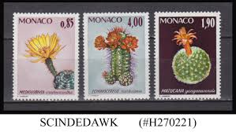 |
| eBay | Eq. Guinea Natire Desert Flower Cactus stamp 1971 A-4 | eBay | 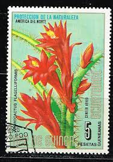 |
| eBay | Monaco - 1964 Marine Life and Plants - Selenicereus sp | eBay | 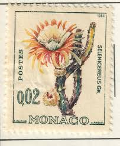 |
| eBay | MONACO 1974, BOTANICAL GARDENS, FLOWERS, FLOWERING CACTUS, Scott 955-960, MNH | eBay | 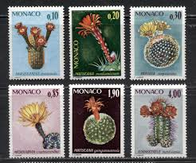 |
| eBay | Monaco 1974 Flowers Scott# 955-60 mint LH | eBay | 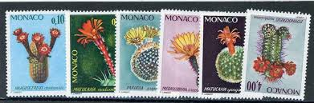 |
| AbeBooks | (Hrsg.). Blühende Kakteen (Iconographia Cactacearum). Im Auftrag der Deutschen Kakteen-Gesellschaft. Bde. 1-3 in 6 Bdn. Neudamm, Neumann, 1901-1904 und 1910-1921). Mit insgesamt 168 (von 180) ganzseit. farblithogr., teils beikolor. Tafeln von Toni ... | 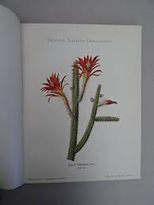 |
| Freestampcatalogue.com | Stamps with the theme Cacti - Freestampcatalogue.com - The free online stampcatalogue with over 500.000 stamps listed. | 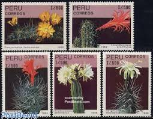 |
| eBay | Monaco #YT537B MNH 1964 Queen of the Night Flowering Cactus Selenicereus [582] | eBay | 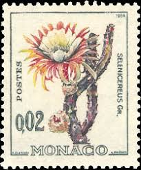 |
| Dreamstime.com | Postage Stamp Afghanistan, 1999. Rat Tail Cactus Hildewintera Aureispina Cactus Plant Flower Editorial Photography - Image of classic, cacti: 213722937 | 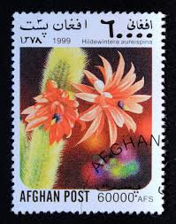 |
| eBay UK | Transkei 1981 Medicinal Plants/Flowers 4v c/b (n21861) | eBay UK | 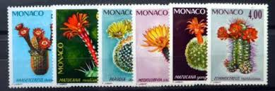 |
| eBay | CACTUS FLORA PERU 1989 FDC VF | eBay | 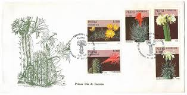 |
| eBay | Benin Nature Flora Flowers Cactus stamp 1996 A-19 | eBay | 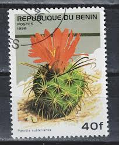 |
| Dreamstime.com | Cactus Matucana en maceta imagen de archivo. Imagen de crisol - 175159847 | 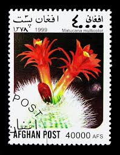 |
| eBay | MONACO STAMP MNH Commemorative MINT unused WM10101 | eBay | 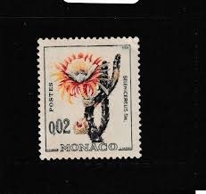 |
| Leboncoin | Série complète timbres neufs Monaco - Cactus - 6 valeurs - Collection | 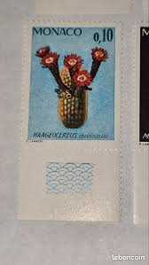 |
| eBay | 👉 MONACO = cactus FLOWERS MNH 💲FREE SHIPPPING💲 | eBay | 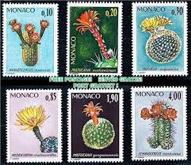 |
| Amazon.com | Play Indita Bonita by Trío Armonia Huasteca on Amazon Music | 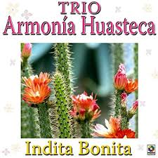 |
| HipStamp | Monaco VF-NH #955-960 | Europe - Monaco, General Issue Stamp / HipStamp | 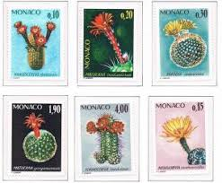 |
| eBay | EBS MONACO 1964 - Flora & Fauna - YT 537A-541A - MNH** | eBay Australia | 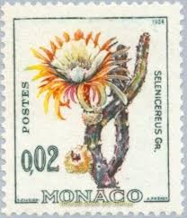 |
| Etsy | 18 CACTUS DESERT FLOWERS Vintage Cancelled Postage Stamps Collector Set Stamp Art Journaling 22TUSFC - Etsy | 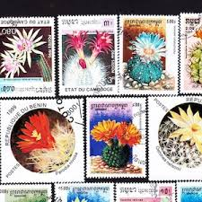 |
| eBay | Machine Cancel Stamps without Gum for sale | eBay | 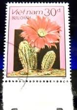 |
| postbeeld.com | Stamps with the theme Cacti - PostBeeld - Online Stamp Shop - Collecting | 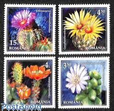 |
| Shutterstock | 9 resultados de imágenes, fotos de stock e ilustraciones libres de regalías para Matucana multicolor | Shutterstock | 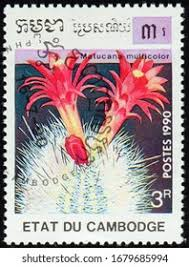 |
| eBay | I1137 2017 ROMANIA CACTUSES FLOWERS FLORA SET MNH | eBay | 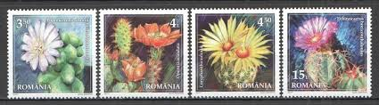 |
| postbeeld.com | Stamp 1990, Cambodia Cactus flowers 7v, 1990 - Collecting Stamps - PostBeeld - Online Stamp Shop - Collecting | 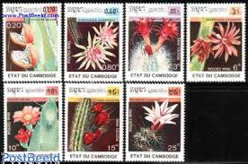 |
| Shutterstock | Cuba Circa 1978 Stamp Printed Cuba Stock Photo 181336652 | Shutterstock | 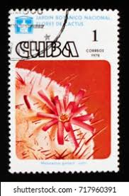 |
| eBay | Cambodga, 1990 Flowering Cactuses set, 7v, CTO | eBay | 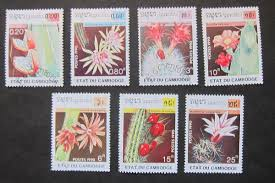 |
| eBay | MONACO Sc 955-60 NH ISSUE OF 1974 - FLOWERS | eBay | 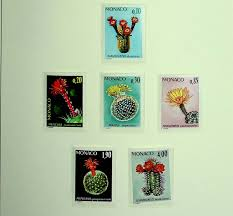 |
| Stamp Community Forum | Latin Species Names For Plants & Animals - Page 38 - Stamp Community Forum | 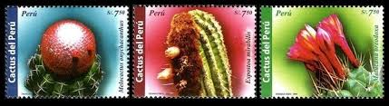 |
| Cactus Affinity | Hildewintera hybid - Hermann Helm - Cactus Affinity | 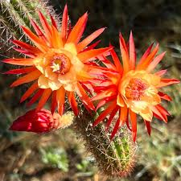 |
| eBay | 869185) Cactus, Flowers, Mongolia | eBay | 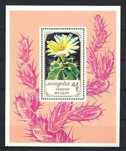 |
| eBay | O) 1989 PERU, CACTUS, FDC XF | eBay | 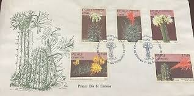 |
| Alamy | Hildewintera aureispina hi-res stock photography and images - Alamy | 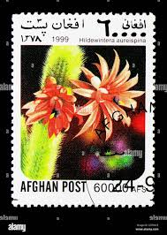 |
| Shutterstock | 21 Parodia Subterranea Royalty-Free Images, Stock Photos & Pictures | Shutterstock | 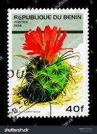 |
| Life is like a cactus. Thorny, but beautiful. 🇵🇹❤️ | ||
| Alamy | Postage stamp botany flora hi-res stock photography and images - Page 17 - Alamy | |
| Colnect | Stamp: Mammillaria elephantideus (Equatorial Guinea(Flowers (I) Cactus & Orchids) Mi:GQ 427,Sn:GQ 74-112,Yt:GQ PA34-D 📮 | |
| Dreamstime.com | Parodia Subterranea, Cacti Serie, Circa 1996 Editorial Photo - Image of antique, post: 116022546 | |
| Postage Stamp Poland, 1968. Coryphanta Vivipara Cactus Flower Editorial Photography - Image of historic, designed: 224677117 | ||
| eBay | Flora - Cactus Afghanistan 1999 (4) Yvert No Not Listed Used | eBay | |
| eBay | MTC0353 Vietnam 3v plants flowers | eBay | |
| The Digital Philatelist | Rhodesia Philately: Aloe – The Digital Philatelist | |
| Le Timbre Classique | Lot 25572 - N°537B en paire avec variété piquage décalé, neuf *, | Decembre 2024 Vente sur Offres n°239 de timbres et lettres | Le Timbre Classique | |
| FredMiranda.com | Loxanthocereus hoxeyi a Species Unknown 10 Years Ago - FM Forums |
{kind=link}